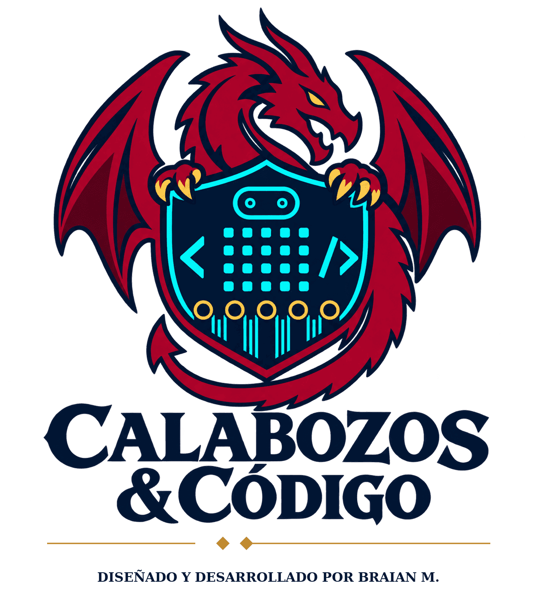
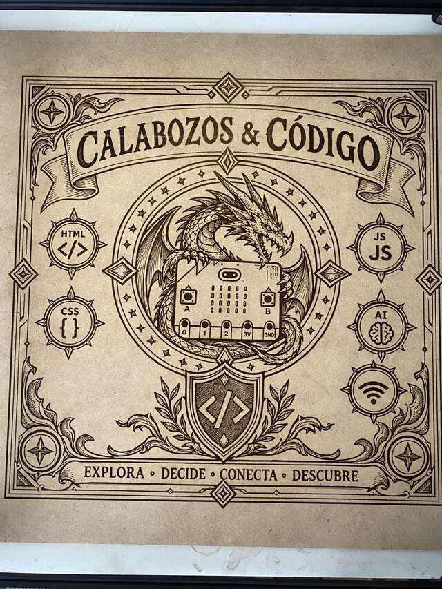
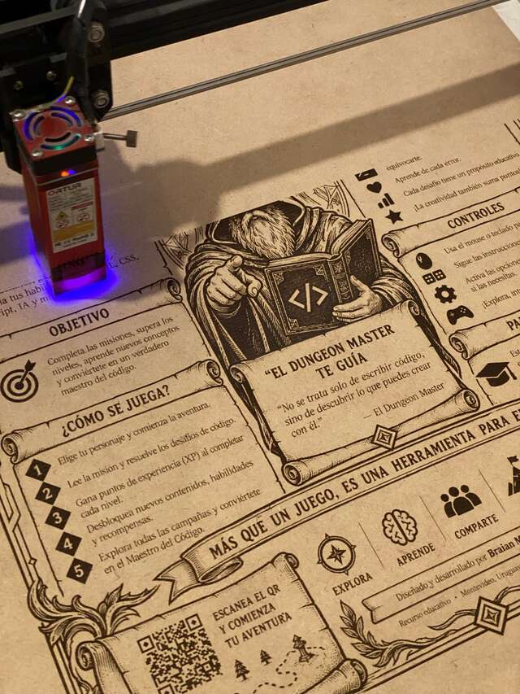
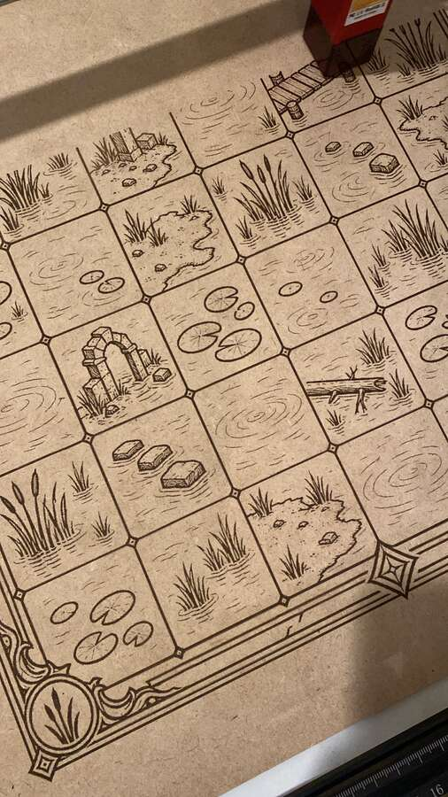
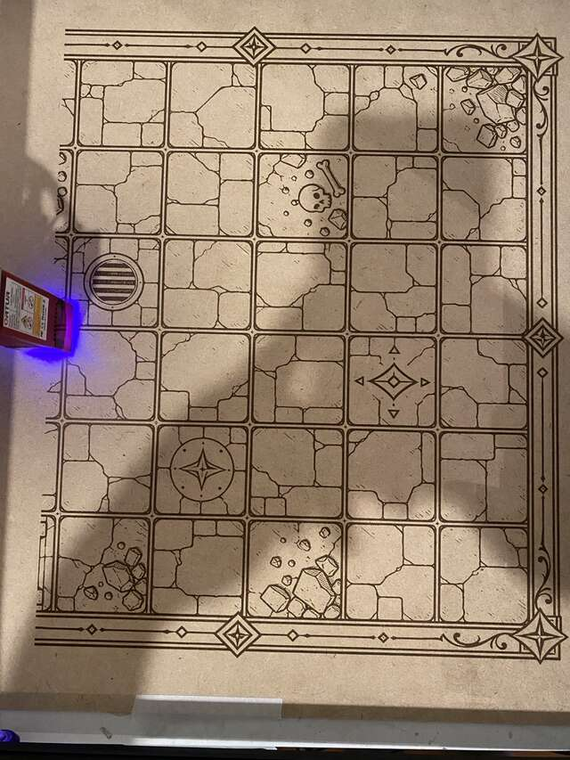

Conseguidor
Completa las cinco runas y reúne XP para abrir el portal.
INSIGNIAS · PROGRESO · DOMINIO
CALABOZOS & CÓDIGOOBJETO DE APRENDIZAJE · SPRINT 2 Jugar la campañaMISIÓN EDUCATIVA · DISEÑO WEB · IoT · IA LOCAL
Ahora la madera, la micro:bit y el navegador hablan el mismo idioma. La compañía no recibe una tarea: recibe una misión en la Cripta del Algoritmo.
Entrar al juego ↘
01 · LA NARRATIVA
El Código Fuente se quebró y sus cinco runas quedaron dispersas por una mazmorra que responde a quienes se atreven a explorarla.
La compañía de aventureros debe recuperar las runas de HTML, CSS, JavaScript, inteligencia artificial y conectividad. En el centro del tablero, un dragón custodia la micro:bit: cada decisión, reto y control físico activa una parte del portal.
«No se trata solo de escribir código, sino de descubrir lo que puedes crear con él».— El Dungeon Master
02 · CUATRO PERFILES, UNA COMPAÑÍA
La misión reparte protagonismo: cada perfil tiene una razón concreta para involucrarse y una forma de aportar al éxito colectivo.
Completa las cinco runas y reúne XP para abrir el portal.
INSIGNIAS · PROGRESO · DOMINIOBusca marcadores, examina el tablero y consulta pistas al DM.
DESCUBRIMIENTO · ESTRATEGIAAsume turnos con sus pares y construye decisiones compartidas.
COOPERACIÓN · INTERCAMBIOAyuda a otros, comparte una pista o cura a un miembro de la compañía.
APOYO · APRENDIZAJE ENTRE PARES03 · EL MOCKUP EXISTE
El boceto no es una maqueta inventada: parte del tablero modular y las placas grabadas a láser. La interfaz digital conserva su iconografía y ordena el recorrido.



04 · SISTEMA VISUAL
El contraste oscuro de la caverna protege la legibilidad; el dorado retoma la madera y el grabado; el jade informa conexiones y estados positivos.
Texto de interfaz: sistema sans-serif para priorizar lectura, controles claros y estados accesibles.
Títulos: Georgia / Palatino · Interfaz: sans-serif del sistema05 · DEL MOCKUP A LA EXPERIENCIA
La IAG se utilizó para proponer y revisar opciones de narrativa, paleta y organización del código. Adapté las propuestas al tablero físico, al repositorio del proyecto y a las placas disponibles; revisé la separación HTML/CSS, la accesibilidad básica y los mecanismos de contingencia. La selección pedagógica y la adecuación al grupo son decisiones docentes.